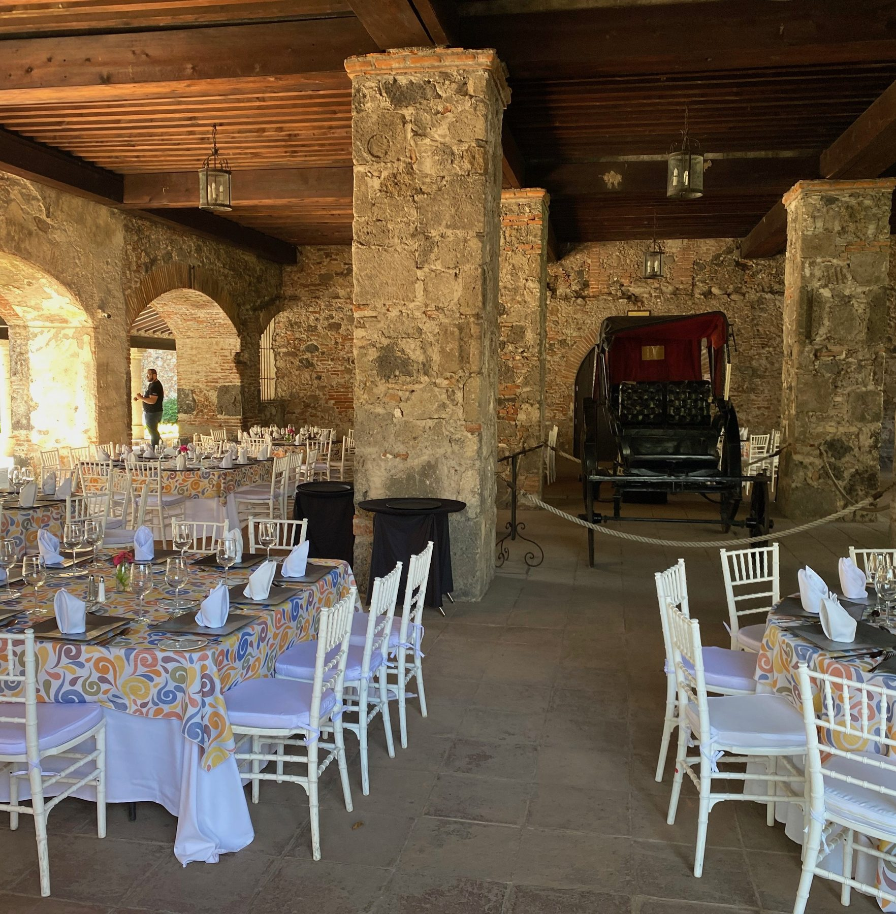

Somos un equipo creativo consultivo especializado en eventos corporativos — no una empresa de logística de mobiliario y catering.
A lo largo de más de 25 años hemos acompañado a empresas medianas y corporativos en momentos clave de su calendario: cierres de año, presentaciones a clientes, lanzamientos de producto y celebraciones internas. Esa trayectoria es la que nos permite anticipar problemas antes de que ocurran y proponer soluciones creativas con la tranquilidad de la experiencia.

“Cualquiera puede rentar un salón y contratar un buffet. Nosotros diseñamos el porqué del evento — y construimos toda la experiencia alrededor de ese propósito y de quienes asisten.”
¿Cerrar el año, lanzar algo, agradecer, vender? Ahí empieza el diseño.
Elegimos lugar, chef y formato según el perfil de tus invitados.
Logística, montaje, personal, confirmación de asistentes y coordinación integral.
Revisamos si el evento cumplió el propósito con el que nació.